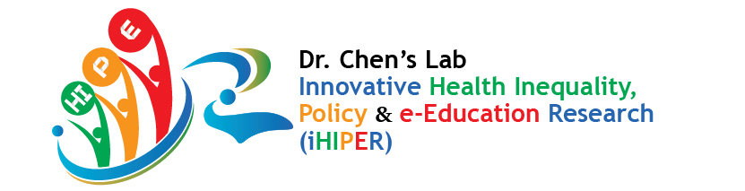
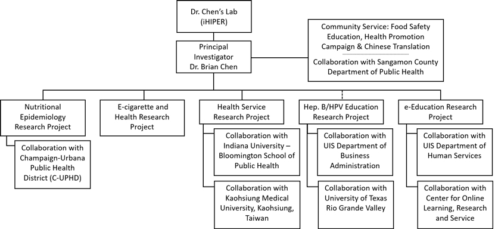

Dr. Chen's Lab - Innovative Health Inequality, Policy and e-Education Research (iHIPER) is a collaborative of public health and higher education scholars from across the University of Illinois and strategic partner health departments, non-profit health agencies, and academic institutions around the world, in partnership with online course instructors/designers/coordinators, and public health educators/practitioners from a variety of organizations, businesses, and government, work toward advancing the field of public health/higher education through our research, training, initiatives, and education. At our core is a commitment to engage graduate students in professional academic and career development through well-planned and organized workshops, one-on-one research guidance, thought-provoking seminars, and academic presentations. The hands-on opportunities @ iHIPER not only enhance members' knowledge on content area, but also help establish practical research skills such as sampling, experimental designs, program evaluation, health policy analyses, and effective use of research methods in conjunction with powerful statistical packages in order to present/disseminate our research conclusions, directions for future research, and implications for policy making & innovative interventions.
The scholarship of Dr. Chen's Lab - Innovative Health Inequality, Policy and e-Education Research (iHIPER) is influenced by what Albert Einstein said regarding curiosity. “The important thing is to not stop questioning. Curiosity has its own reason for existing.” We are always eager to use our expertise and skills to discover the cause and possible solutions for public health problems and issues. Higher levels of health education and health promotion efforts can really improve the well-being of poor people or underserved populations. Our goal is to make meaningful contributions to the understanding of public health problems and intervention strategies that may resolve problems effectively. In addition, health disparity and inequality have been a growing public health issue in the U.S. for years, resulting in the national goal of eliminating health disparities and achieving health equity as noted in Healthy People 2020 that provides science-based, ten-year national objectives for improving the health of all Americans (HealthyPeople.gov). Therefore, it is important to examine factors that lead to health disparities.
The following are the primary objectives of Dr. Chen's Lab - Innovative Health Inequality, Policy and e-Education Research (iHIPER):
1. To conduct research in the areas of obesity, health policy/service, health promotion, and technology:2. To dedicate to the advancement of important and interdisciplinary research topics through Community-Based Participatory Research (CBPR)
3. To facilitate research and statistical training to future scholars/practitioners through both research experiences, statistical support, and linkages to strategic partners on campus and in communities
4. To provide education on public health topics to students and community-based health and education professionals through a variety of creative and collaborative mechanisms and in ways that consider the benefits of technology-based and distance learning methods
